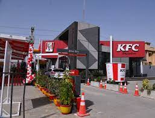
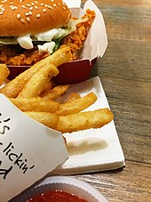

KFC (also commonly referred to by its historical name Kentucky Fried Chicken) is an American fast food
restaurant chain headquartered in Louisville, Kentucky, that specializes in fried chicken. It is the world's
second-largest restaurant chain (as measured by sales) after McDonald's, with 22,621 locations globally in 150
countries as of December 2019.[4] The chain is a subsidiary of Yum! Brands, a restaurant company that also owns
the Pizza Hut and Taco Bell chains.[5]
KFC was founded by Colonel Harland Sanders (1890–1980), an entrepreneur who began selling fried chicken from his
roadside restaurant in Corbin, Kentucky, during the Great Depression. Sanders identified the potential of the
restaurant franchising concept and the first "Kentucky Fried Chicken" franchise opened in Salt Lake City, Utah,
in 1952. KFC popularized chicken in the fast-food industry, diversifying the market by challenging the
established dominance of the hamburger. By branding himself as "Colonel Sanders", Harland became a prominent
figure of American cultural history and his image remains widely used in KFC advertising to this day. However,
the company's rapid expansion overwhelmed the aging Sanders and he sold it to a group of investors led by John
Y. Brown Jr. and Jack C. Massey in 1964.
A modern KFC restaurant in Murphy, North Carolina
KFC was one of the first American fast-food chains to expand internationally, opening outlets in Canada, the
United Kingdom, Mexico and Jamaica by the mid-1960s. Throughout the 1970s and 1980s, it experienced mixed
fortunes domestically, as it went through a series of changes in corporate ownership with little or no
experience in the restaurant business. In the early 1970s, KFC was sold to the spirits distributor Heublein,
which was taken over by the R. J. Reynolds food and tobacco conglomerate; that company sold the chain to
PepsiCo. The chain continued to expand overseas, however, and in 1987 it became the first Western restaurant
chain to open in China. It has since expanded rapidly in China, which is now the company's single largest
market. PepsiCo spun off its restaurants division as Tricon Global Restaurants, which later changed its name to
Yum! Brands.
KFC's original product is pressure-fried chicken pieces, seasoned with Sanders' signature recipe of "11 herbs
Yum! Brands.
and spices". The constituents of the recipe are a trade secret. Larger portions of fried chicken are served in a
cardboard "bucket", which has become a feature of the chain since it was first introduced by franchisee Pete
Harman in 1957. Since the early 1990s, KFC has expanded its menu to offer other chicken products such as chicken
fillet sandwiches and wraps, as well as salads and side dishes such as French fries and coleslaw, desserts and
soft drinks; the latter often supplied by PepsiCo. KFC is known for its slogans "It's Finger Lickin' Good!",
"Nobody does chicken like KFC" and "So good".
KFC's core product offering is pressure fried on-the-bone chicken pieces seasoned with Colonel Harland Sanders'
"Original Recipe" of 11 herbs and spices.[57] The product is typically available in either two- or three-piece
individual servings or in a family size cardboard bucket typically holding between six and 16 chicken pieces. In
territories that follow the system handed down by Colonel Sanders, such as Canada and the UK, each chicken is
divided into nine different cuts (two drumsticks, two thighs, two wings, two breast pieces and one
keel);[58][59] however, the United States now uses an eight-piece cut.[60]
The chicken is hand-breaded at individual KFC outlets with wheat flour mixed with seasoning in a two- to
four-minute process.[61][62] It is then pressure fried for between seven and 10 minutes (the timing differs
between countries) in oil at 185 degrees Celsius.[61][63][64] Following this, the chicken is left to stand for 5
minutes in order for it to sufficiently cool before it is placed in the warming oven.[61] It is KFC policy to
discard  chicken if it has
not been sold within 90 minutes in order to ensure freshness.[61] The frying oil
varies regionally and versions used include sunflower, soybean, rapeseed and palm oil.[65] A KFC executive
stated that the taste of the chicken will vary between regions depending on the oil variety used and whether the
chicken has been corn-fed or wheat-fed.[65]
Zinger served with crispy fries and Thai chili sauce in Malaysia
As well as its core chicken on the bone offering, KFC's major products include chicken burgers (including the
Zinger and the Tower); wraps ("Twisters" and "Boxmasters"); and a variety of finger foods, including crispy
chicken strips and hot wings.[66][67] Popcorn chicken, which consists of bite-sized pieces of fried chicken, is
one of the most widely available KFC products.[68] In some locations, such as in Australia, Belarus, Malaysia
and South Africa, chicken nuggets are also sold.[69]
McCormick & Company is KFC's largest supplier of sauces, seasonings and marinades and is a long-term partner in
new product development.[62]
Due to the company's previous relationship with PepsiCo, most territories supply PepsiCo products, but
exceptional territories include Barbados, Greece, Mexico, New Zealand, the Philippines, Romania,[70] South
Africa, Turkey, Indonesia (since 2019),[71] Singapore (since 2022)[72] and Malaysia (since 2022)[73] which stock
drinks supplied by The Coca-Cola Company, and Aruba, which stocks RC Cola from the Cott
Corporation.[74][70][75][76][77] In Peru, the locally popular Inca Kola is sold.[78]
Launched in 2009, the Krusher/Krushem range of frozen beverages containing "real bits" such as Kit Kat, Oreo and
strawberry shortcake is available in over 2,000 outlets.[79] Egg custard tart is a popular dessert worldwide,
but other items include ice cream sundaes and tres leches cake in Peru.[80]
In 2012, the "KFC AM" breakfast menu began to be rolled out internationally, including such items as pancakes,
waffles and porridge, as well as fried chicken.[81][82]
On August 27, 2019, KFC tested meatless boneless wings and nuggets in Atlanta, Georgia.[83][84]
In February 2023, Kentucky Fried Chicken in Australia announced that several items would no longer be sold in
their menu, including wings, popcorn chicken, Nashville hot sauce and strawberry lemonade.[85]